Crystals
Contents
- The science behind crystals
- Crystal Formation Through the Cooling of Magma
- Crystal Formation in Solution
- Identifying and classifying crystals
- Categorizing crystals by shape
- Crystal Chart
The Science behind crystals
Crystals are minerals that naturally form into solid, pure, inorganic substances. All crystals have a ‘‘crystal structure’’ which means that the atoms in a mineral are arranged in an orderly pattern that always repeats.
Crystals can be formed in a number of different ways, but are most commonly formed from the cooling of magma, or through a solution.
These processes are called crystallization.
Crystal Formation Through the Cooling of Magma
Molten, often referred to as magma, cools when it reaches the surface of the earth.
As it cools down, its atoms form crystals. Rocks formed by cooling magma are called igneous rocks.
Here is a more detailed diagram shown below:
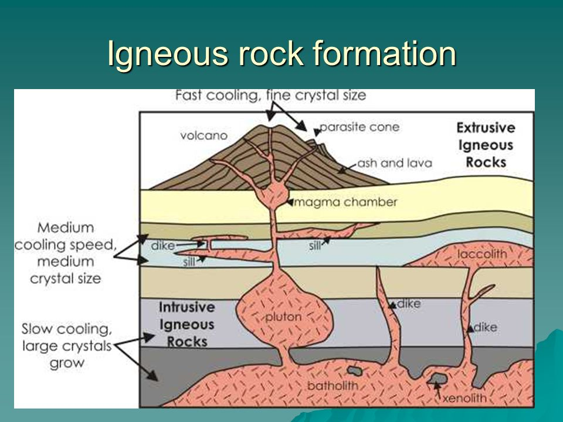
Fun Fact! The word Igneous comes from the mid 17th century latin word igneus that originated from the word ignis meaning fire.
Crystal Formation in Solution
When there are elements in a solution and the water evaporates, the ions left over can form crystals.
Sometimes compounds in a solution can precipitate, forming a solid out of ions in a solution.
Here is a simple visual of the precipitation process
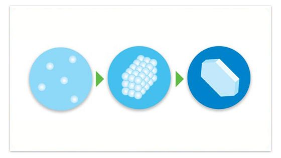
Identifying and classifying crystals
When we identify crystals we look at 6 main physical properties:
- 1. Color
- The amount of color gained depends on how much light passes through the mineral
- Colors of crystals can vary depending on atomic properties
- 2. Streak
- The crystal is scraped against a blank tile producing a line
- The mineral specks on the line commonly appears a different color that the crystal itself
- 3. Luster
- Luster test the reflectiveness in a mineral.
- Metalic minerals reflect light
- Nonmetalic minerals will absorb more light and are known to have higher thermal conductivity.
- 4. Mass
- Comparing the density of the mineral to the density of water will measure the specific gravity.
- For example, if a crystal has equal density to water, it will have the specific density of 1.
- 5. Hardness
- The mineral’s ability to resist scratching.
- Fun Fact! Diamonds are the hardest mineral. Only a diamond can scratch another diamond.
- 6. Cleavage and Fracture
- How a mineral breaks apart depends on its crystal structure.
- Cleavage is how inclined a crystal is to break up into flat sheets.
- Fractures is how inclined the mineral is to break into random, jagged pieces.
Below is a depiction of a Cleavage vs Fracture break
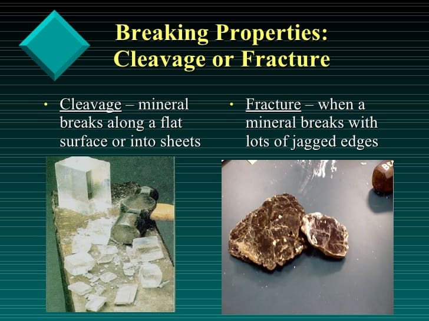
Read more about crystal characteristics at The First University of Saskatchewan’s Physical Geology site.
Categorizing crystals by shape
We can categorize the shapes of crystals into 7 groups:
1. Hexagonal: Looks like a hexagonal prism, based on its 6-sided inner structure.
Example of hexagonal Crystal:
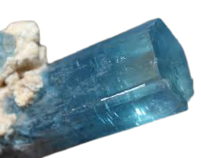
2. Cubic or Isometric: Appears as a cube, based on a squares inner srtucture.
Example of cubic crystal:

3. Orthorhombic: Based on a rhombic inner structure, looks like a pyramid.
Example of orthorhombic crystal:

4. Trigonal: Looks like a triangular prism, based on its 3-sided inner structure.
Example of trigonal crystal:
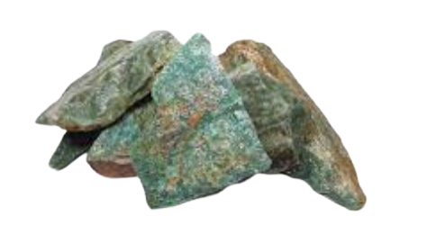
5. Triclinic: Based on the shappe of 3 inclined angles.
Example of triclinic crystal
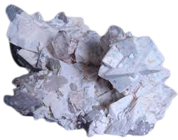
6. Tetragonal: Based on a rectangular inner structure, looks like a rectangulr prism with pyramid ends.
Example of tetragonal crystal:
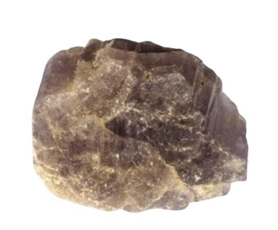
7. Monoclinic: Structure is based on a parallelogram
Example of monoclinic crystal:
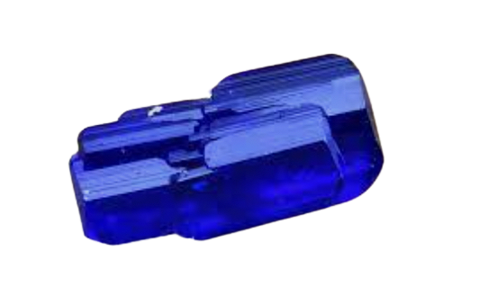
Crystals Chart
This chart is sorted in alphabetical order. Press on the crystal’s name to learn more about it’s specialties.
| 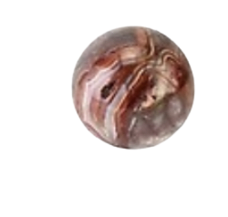 |
Agate |
|
Heals inner anger, strengthens relationships, heals anxiety, and wards off evil energy. |
| 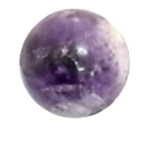 |
Amythest |
- Uruguay
- South Korea
- Russia
- United States
- South India
|
Protective from negative energy, calms spirit, relieves body from insomnia, and boosts immune system. |
| 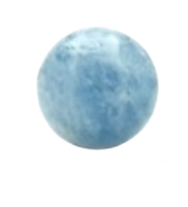 |
Aquamarine |
- Siberia
- Pakistan
- Mozambique
- Madagascar
- Zambia
|
Represents loyalty, hopefulness, truthfulness, and was believed to be the treasure of mermaids. |
| 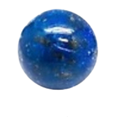 |
Blue Lapis |
- Persia
- Afghanistan
- Chile
- Myanmar
|
Symbolizes wisdom, truth, royalty, and strong intellect. |
| 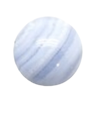 |
Bluelace Agate |
- Mexico
- United States
- Southern and Western Africa
|
Relaxes mind, improves mental activity, and cleanses the mind of clutter. |
| 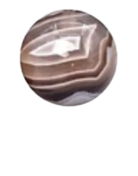 |
Botswana Agate |
- Botswana
- Southern America
|
Assists in overcoming fears, clears the heart, and improves analytical activity. |
| 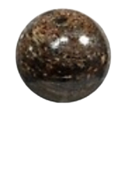 |
Bronzite |
- United States
- South Africa
- England
- India
- India
- Norway
- Green land
|
Helps with settling inner emotional buildup, and repels negative spiritual energy. |
 |
Brown Tiger Eye |
- Africa
- South America
- Australia
- Brazil
|
Enhances physical abilities, helps bring a sense of clarity and composition during overwhelming situations. |
| 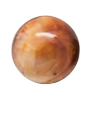 |
Carnelian |
- Indonesia
- Brazil
- India
- Russia
- India
- Germany
|
Symbolizes status, increases spontaneity, and shakes off negative energy. |
| 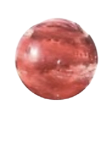 |
Cherry Quartz |
|
Brings energy, balance and rhythm to your life, and helps you reach your goals! |
| 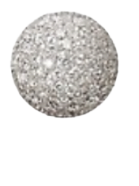 |
Diamond |
- Australia
- Botswana
- Brazil
- China
- Congo
- Russia
- South Africa
|
Boosts strength love and health, increases ones energy, reduces fear and brings new beginnings. |
| 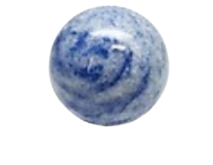 |
Dumortierite |
- Australia
- France
- Brazil
- Canada
- Norway
- Peru
- Poland
- Russia
- Sri Lanka
- Italy
- Madagascar
- Namibia
- Nevada
|
Relaxes mind, improves spiritual connections and ability to freely express one’s self. |
| 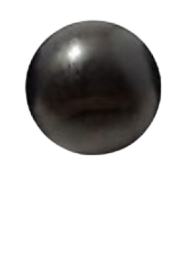 |
Ebony |
- Sri Lanka
- India
- Africa
- Indonesia
|
Alleiviates energy, brings upon inner strength and support during times of stress. |
| 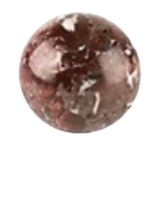 |
Garnet |
- Brazil
- India
- Madagascar
- United States
- China
- Kenya
- Madagascar
|
Awakes creative energy, increases prosperity and fortune. |
| 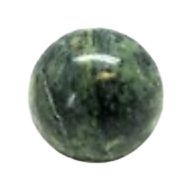 |
Green Jade |
- Mynamar
- New Zealand
- Canada
- Surinam
- Southern Europe
- Russia
- China
|
Encourages logical and objective thinking and helps build healthy relationships. |
| 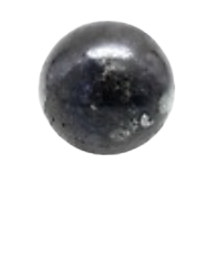 |
Hematite |
- North America
- China
- Australia
- Brazil
- Russia
- Ukraine
- South Africa
- India
|
Absorbs negative energy, reduces physical and emotional pain. |
| 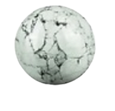 |
Howlite |
|
Brins openmindedness upon ones soul as well as self awarness. |
| 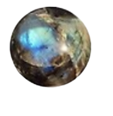 |
Labradorite |
- Norway
- Finland
- United States
- Canada
|
Brings confident and cosmic energy, artistic ambition and creative expression. |
| 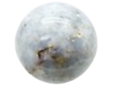 |
Opal |
- Brazil
- Mexico
- Honduras
- Western United States
- Australia
|
Represents hope, purity, and youthfulness, emotional stabilizer. Wearing an opal brings loyalty and faithfulness. |
 |
Rose Quartz |
- Brazil
- Sweden
- Nambia
- California
- Maine
|
Known as the stone of eternal, unconditional love, it inspires compassion and feelings of peace. |
| 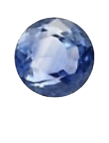 |
Sapphire |
- Sri Lanka
- Madagascar
- Australia
- Tanzania
|
Releases mental tension, serenity calmness, and increases one sense of justice. |
| 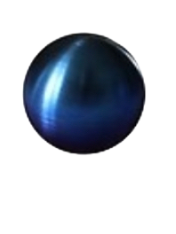 |
Titanium |
|
Brings strength and determination. |
| 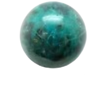 |
Turquoise |
- Iran
- Egypt
- Northwest China
- Mexico
|
Brings wisdom, protection, good fortune, and strong loving relationships. |
Return to top of chart
Return to top of page